About Me
Hi, Nice To Meet You! I'm Tan Jit Sheng, a passionate developer with experience in web development, Internet-of-Things and problem solving. I enjoy building projects that make an impact and learning new technologies.
I'm always excited to work on innovative solutions and collaborate with like-minded individuals who share a passion for technology and creating meaningful digital experiences.
Education
Bachelor of Computer Engineering with Honours
Universiti Teknikal Malaysia Melaka
Currently pursuing a comprehensive degree program focusing on computer systems, software engineering, and digital technologies.
Diploma in Electronic Engineering
Universiti Teknikal Malaysia Melaka
Completed diploma program with focus on electronic systems, circuit design, and embedded technologies.
SPM (Malaysian Certificate of Education)
SMK CHIO MIN
Successfully completed Malaysian Certificate of Education with strong foundation in mathematics and sciences.

Digital Image Processing Reflections
Although I am pursuing Computer Engineering, my first thought on the digital Image Processing is just some simply calculation to modify and edit the images. Within this 15 week learning journey with Dr Fajar, it quite turn me into a new mindset towards the word Digital Image Processing. Dr Fajar explain it very well and provide us with the hands-on mathematical and MATLAB execution. What I most remember is Dr Fajar mentioned that we need to seize the results that can be calculated in a short duration by using the MATLAB codes. A lot knowledge that are not covered by the syllabus also been taught to us to broaden our horizons. Although the judgement of the image quality is subjective, but we are given chances to learn more deep into the images by pixels.
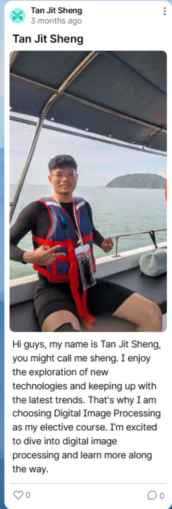
Introduction in DIP Classes
About Me
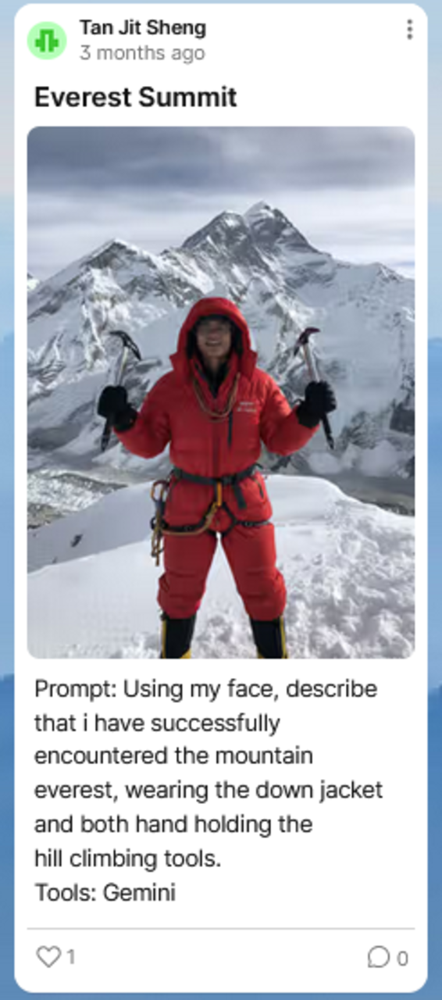
First AI Generated Pictures using Gemini Model
Explore latest power of AI in Images
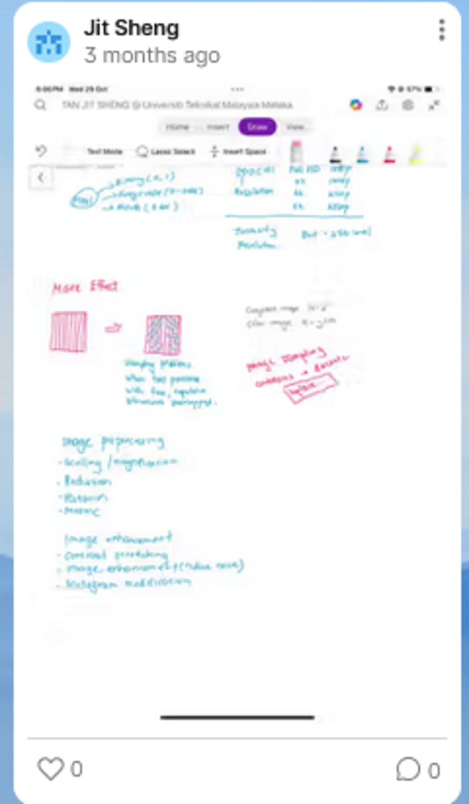
Fundamentals of Image Processing
My jotted down notes and observations
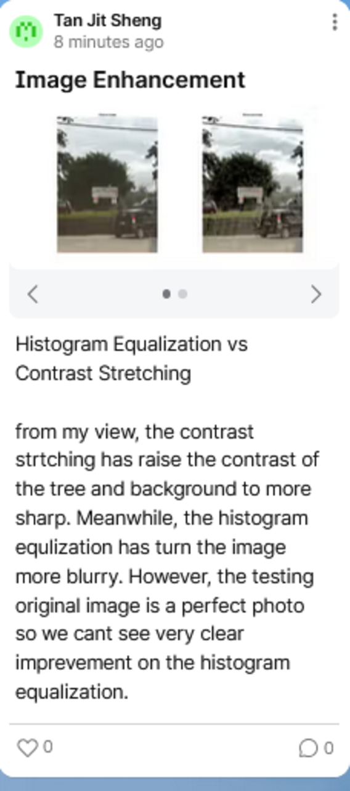
Image Enhancement
Histogram Equalization and Contrast Stretching using MATLAB
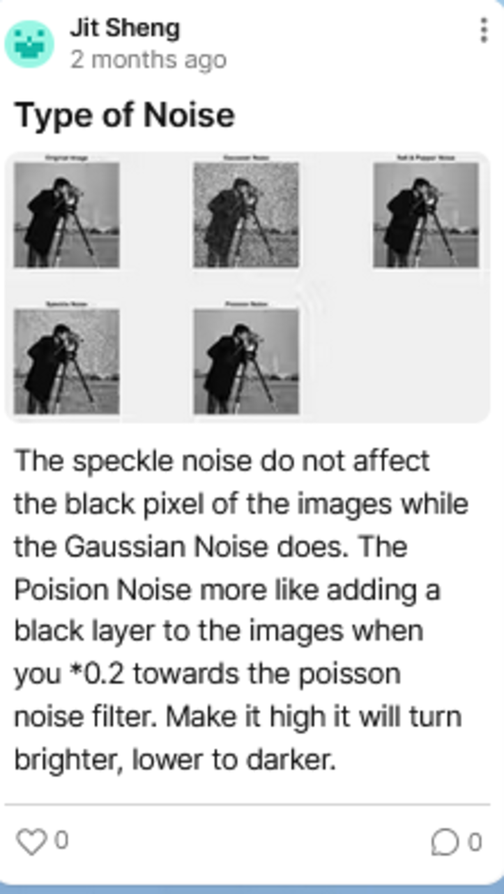
Type of Noise
Observe noise types and their effects on images
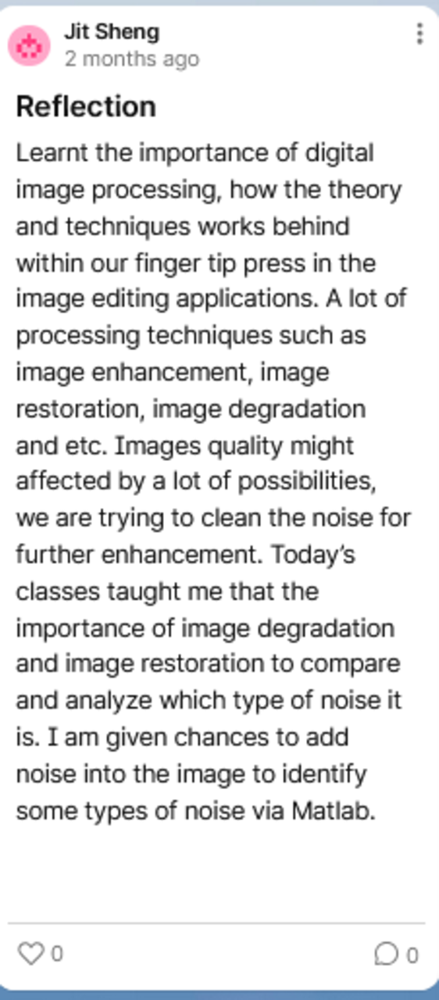
My reflection on Week 9
Mid-sem reflections and insights
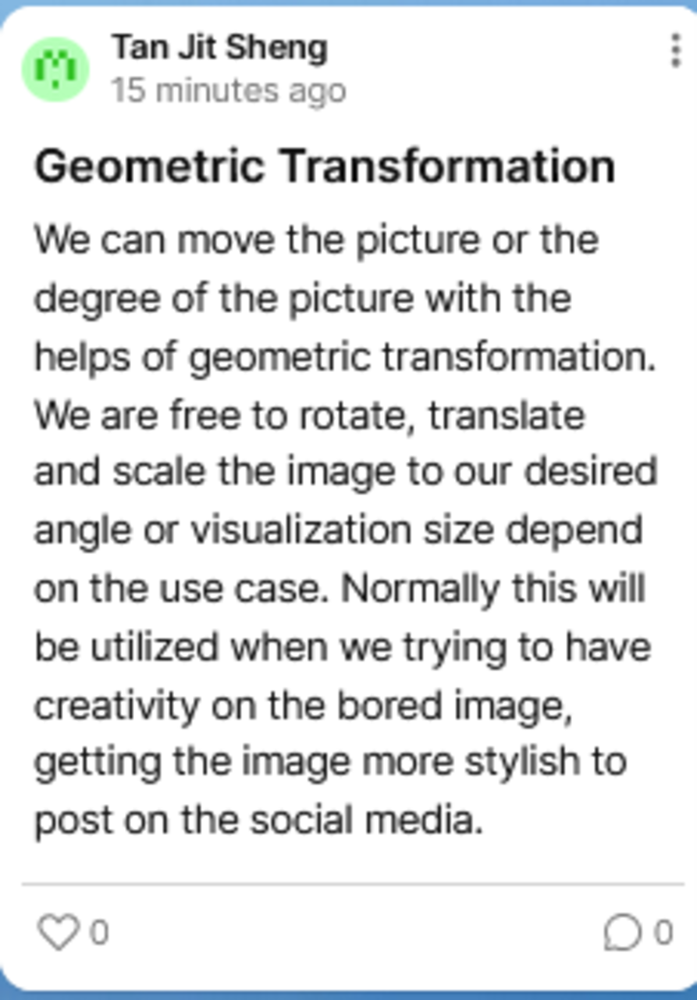
Geometric Function
How geometric transformations affect images
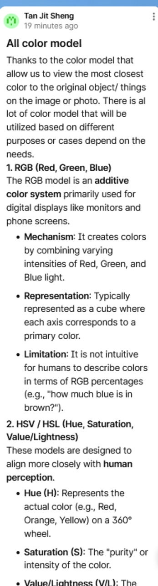
Color Model
Types of Color Models and their applications
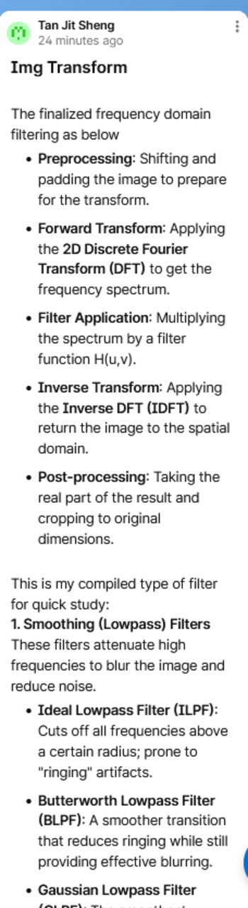
Image transform
Purpose and techniques of image transformation
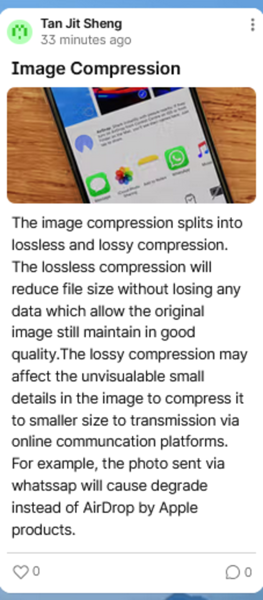
Image Compression
Why compress images
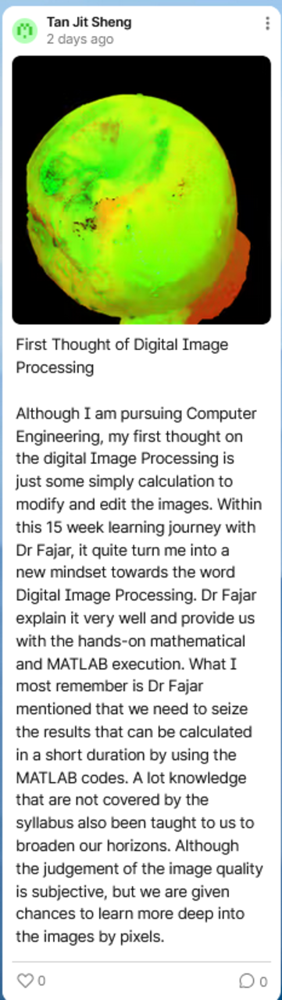
End-of-semester Reflection
My thoughts and learnings from the whole semester
Projects
Smart Indoor Plant Watering System using Internet-of-Things (2022)
Diploma Final Year Project to develop an automated system for watering indoor plants using IoT technology.
View on YoutubeFruit Grading System using Yolo and HSV Color Model (2026)
Group Project focused on developing a system for grading fruits based on color and shape using Yolo and HSV color model techniques.
View on Youtube (Part 1) View on Youtube (Part 2)Real-Time Monitoring and Fault Detection In Soalr PV System Using IOT And Machine Learning (InProgress)
Automated and low cost system that collect electrical and environmental data for Solar PV System with TinyMl on ESP32.
View Proposal on CanvaContact
If you want to get in touch, feel free to reach out through any of these channels. I'm always open to discussing new opportunities, collaborating on interesting projects, or just having a conversation about technology!